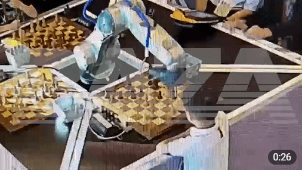

7-Year-Old's Finger Broken By Chess-playing Robot
|  |
A seven-year-old boy's finger was broken by an automated chess-playing robot during the Moscow Open in a video posted on July 21st.
The original video, featured on the Baza channel on Telegram, has circulated on several social media platforms and has already accumulated nearly 600k views at the time of this article's publication.
|
In the video, the robot plays on three chessboards simultaneously.
The boy makes a move when the robotic arm lowers onto his hand.
Four men rush in to help, the boy's finger is freed, and he is taken away.
|
Sergey Lazarev, president of the Moscow Chess Federation, shared with Russian news agency TASS: “The child made a move, and after that, we need to give time for the robot to answer, but the boy hurried, the robot grabbed him.”
He added, “We have nothing to do with the robot," although he also said measures will be taken "so that such a situation does not happen again."
|
The robot had been publicly used for over a decade with grandmasters and this is the first time an accident like this has occurred.
Sergey Smagin, the federation's vice president, told RIA Novosti they will look into adding more protective systems.
|
|
The boy finished the tournament with a cast.